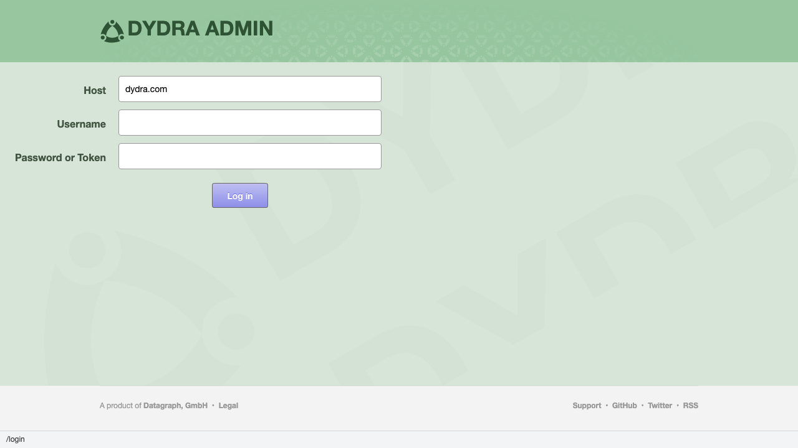
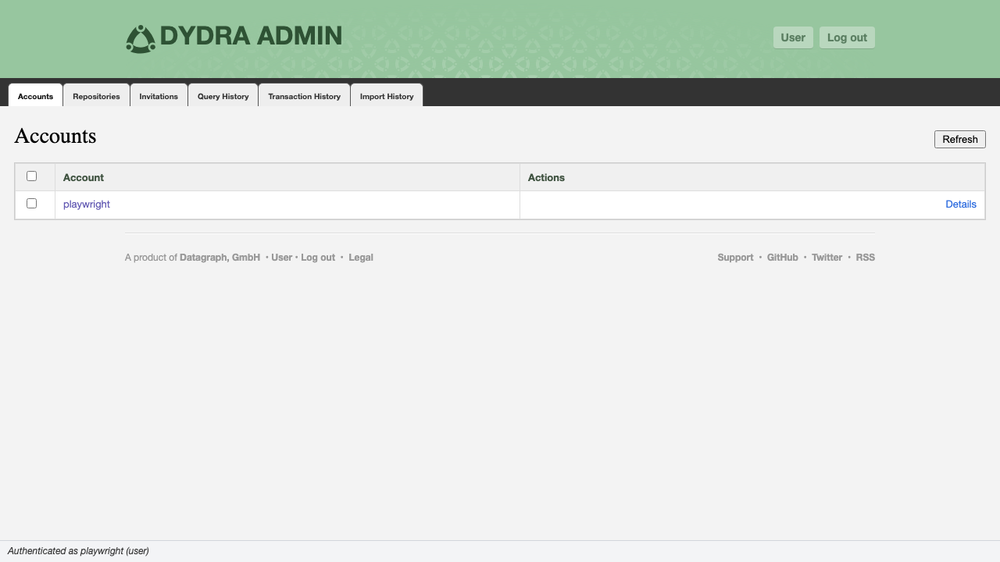

1.1 The Login Page
The administrative console is reached at https://dydra.com/ui/admin. An unauthenticated request to any route within this path is redirected to /ui/admin/login. The login page presents a form requesting three inputs.

Figure 1.1: The administrative login form.
1.2 Input Fields
| Field | Default Value | Description |
|---|---|---|
| Host | Current window host, or the ?host= query parameter if present |
The base URL of the Dydra installation. Determines the API endpoint for all subsequent requests. |
| Username | Restored from localStorage if a previous session exists |
The account name of the authenticating user. |
| Password | (empty) | The account password or API authentication token. See Section 1.4. |
1.3 Authentication Procedure
Submission of the login form initiates the following sequence:
/system/users/{accountName}/configuration and inspects the administrator_of property.
administrator_of includes http://dydra.com, the session is marked as administrator-level. Otherwise it is marked operator-level. See Section 1.5 for the implications of each designation.
/admin/ (the dashboard) and displays a confirmation message: "Authenticated as {accountName} ({admin|user})".

Figure 1.2: The location bar confirmation after successful authentication.
1.4 Credential Types
1.4.1 Password Authentication
Standard account password. Suitable for interactive sessions.
1.4.2 Token Authentication
An API authentication token may be supplied in lieu of a password. Tokens are opaque strings available from the account's profile in the user application. Token authentication is recommended for scripted or programmatic access and for accounts subject to password rotation policies.
1.5 Privilege Levels
The console enforces two privilege levels at the session level. The determination is made once at login and is not re-evaluated during the session.
| Level | Write Operations Available |
|---|---|
| Administrator | Create and delete accounts; create and delete repositories; issue, resend, and delete invitations |
| Operator | None — all write controls are hidden |
1.6 Session Persistence
The application stores the authenticated username in localStorage under the key dydra.session.accountName. This value is restored into the username field on subsequent visits to the login page, eliminating the need to re-enter the account name. The access token and session state are held in memory only and are not persisted across browser sessions.
1.7 Sign-Out
The Log out control is displayed in the header when a session is active. Activating it performs the following operations in sequence:
- Clears the auth store (discards the access token)
- Terminates the session object
- Navigates to
/admin/login(replacing the current history entry)
1.8 Error Handling
1.8.1 Invalid Credentials
The authentication endpoint returns an error response. The application displays the error message in the alert area above the form and in the location bar (with a five-second timeout). The form fields remain populated for correction and resubmission.
1.8.2 Network Errors
If the host is unreachable, a network error is reported in the same fashion. Verify the host field value and network connectivity before retrying.
1.8.3 Insufficient Privilege
Authentication succeeds even if the account is not an administrator. The session is established with operator-level access. Write controls throughout the console are suppressed accordingly. If administrator access is required, authenticate with an account that holds the administrator_of designation.